SALT SWEEPER
A minesweeper-inspired roguelike with fantasy roots. Authored GDD, implemented combat mechanics, designed diverse systems, balanced weapons and enemies, and conducted group playtesting sessions.
>> PLAY ON ITCH.IO (opens in new tab) >> GDD (opens in new tab) >> Systems Sheet (opens in new tab)// GAMEPLAY_VIDEO
// KEY_RESPONSIBILITIES
One of my proudest achievements: creating efficient, robust dialogue and inventory systems. Built modular tools and easily editable spreadsheets that allowed me to define item behavior, balance individual statistics, and write NPC dialogue all from single sources.
Minesweeper is fast paced. Turn-based combat can be a slog.
Matching the complexity of the combat to the speed of exploration included many iterations, prototypes, and balances according to testing team feedback.
I drafted and wrote Salt Sweeper's in-depth world building that presents itself in the dialogue and environmental design.
I also wrote each character, from their storyline, to evey individual line of dialogue.
// DESIGN_PROCESS
WRITING THE GDD
All good games begin with an in-depth game design document. Over the years, I have learned that the GDD isn't some place to create the entire game and detail evey mechanic. Its somewhere to start and iterate on throughout development.
I began by writing what I knew I needed: a core gameplay loop flowchart, specifics on the world generation, combat specifications, and UI drafts. This gave me a basis to begin my prototype with, and would be iterated on throughout my development.
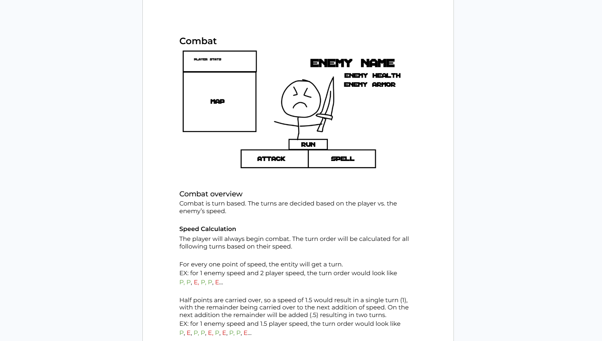
CREATING THE FLOWCHART
One thing in pre-production I'd like to highlight is the flowchart for the main gameplay. This was the most important thing in the entire document to nail down because it is really a complete overview of the game and gave a basis for development. This was something that I continued to iterate on throughout development.
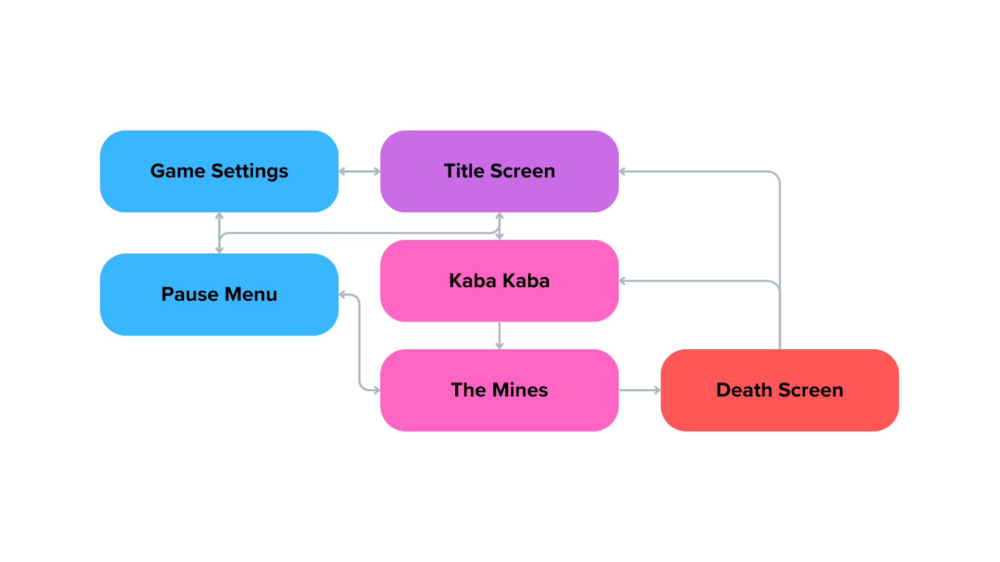
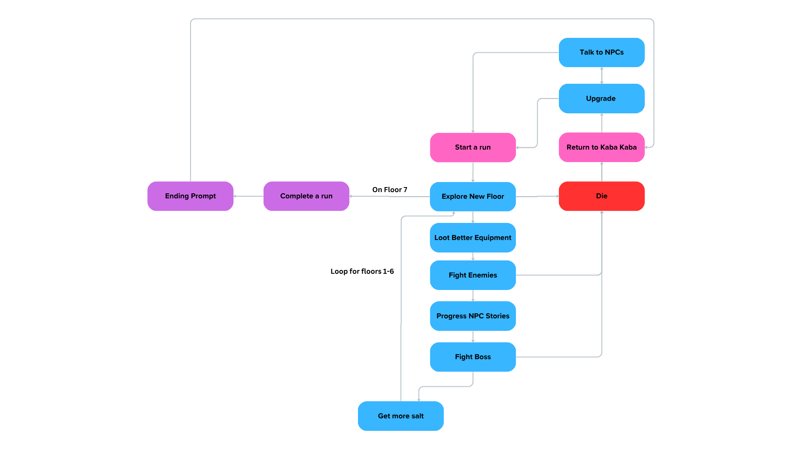
UI CONCEPT -> REALITY
I mocked up a lot of the UI in aseprite, making everything in rough shapes and titles. IT WAS VERY IMPORTANT TO DO THIS because UI in Gamemaker is notoriously difficult to make edits to (editing would mean a lot of work). With a good plan in place, there shouldn't need to be too many changes made besides general positioning... I made the mistake of not doing this for a couple sections of UI in this game.
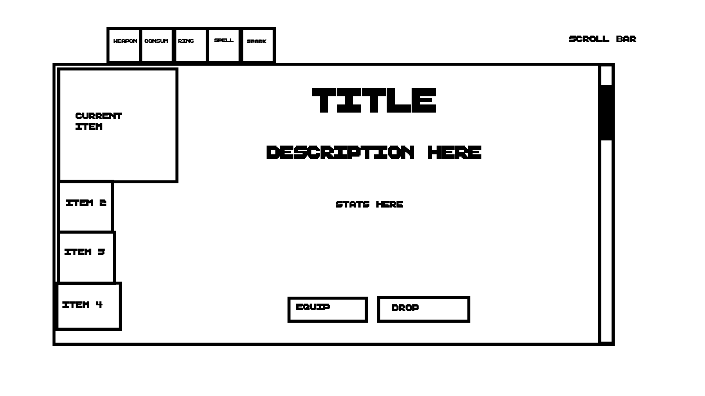
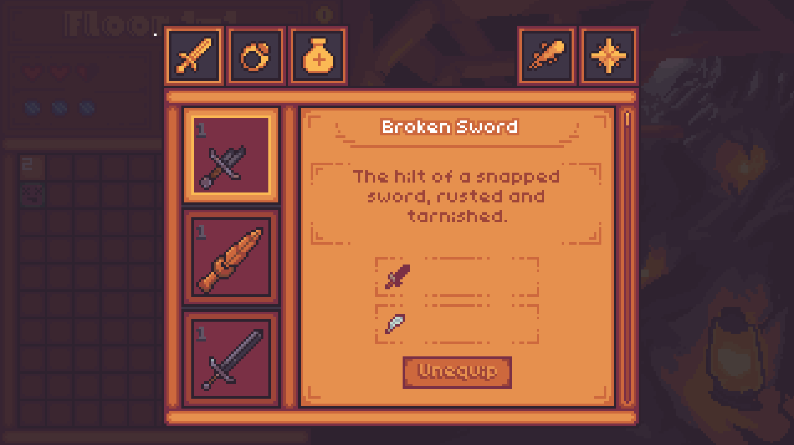
SYSTEM DESIGN
I knew that I wanted to have a lot of diverse weapons, items, and spells -- which presents the problem "how did I manage it all?"
To begin, I contemplated working with a json that I could pull from, but I found that it would be simpler and nearly as efficient to just use a .csv to store all the data.
I designed the sheets to be easy to read and edit, making adding new items trivial -- the only thing I acutally needed to do in engine was to upload the sprite.
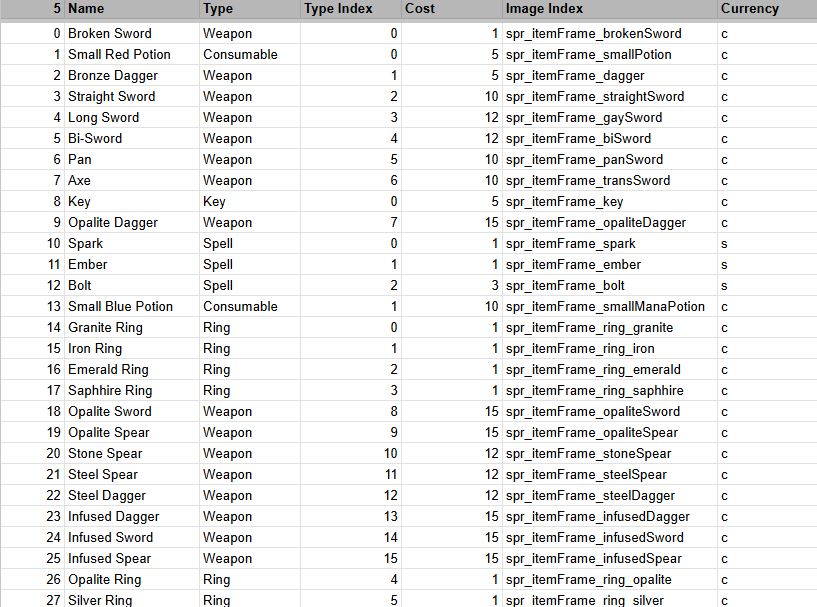
The dialogue system uses the same data-driven approach — NPC lines, conditions, and branching flags are authored externally and parsed at runtime. This made writing and iterating on story content entirely separate from engineering work.
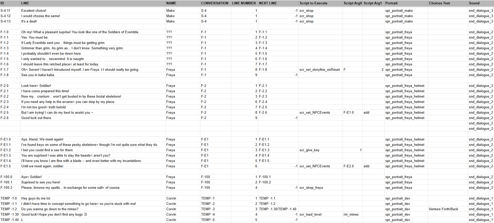
The minesweeper floor generation ties into both systems — tile state, enemy spawns, and loot drops are all resolved through the same data pipeline, keeping the roguelike loop tightly coupled without being brittle.
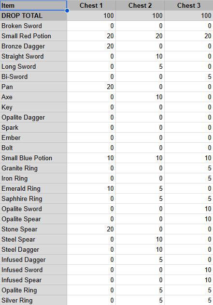
COMBAT DESIGN
Fitting turn-based combat into a fast-paced sweep loop took serious iteration — early versions either slowed the game to a crawl or felt disconnected from the minesweeper layer. The final design integrates spell, weapon, and armor types into a rock-paper-scissors layer that resolves quickly and rewards planning ahead.
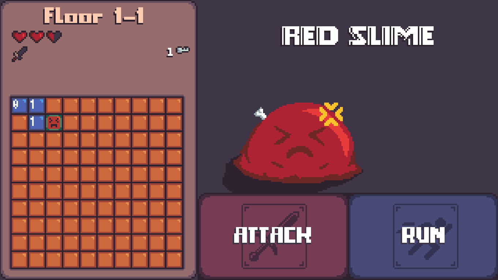
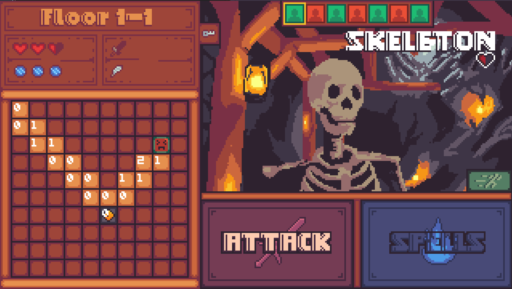
PLAYTESTING
Playtests were run with a consistent structure: testers played a defined session with no guidance, then I debriefed with targeted questions rather than open feedback. Watching where players hesitated or made wrong assumptions told me more than what they said afterward — confusion is always visible before it's speakable.
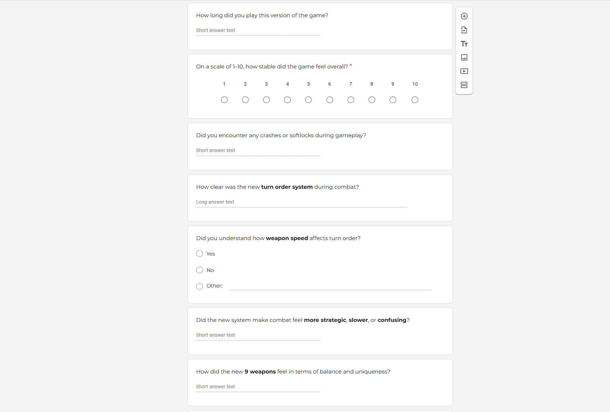
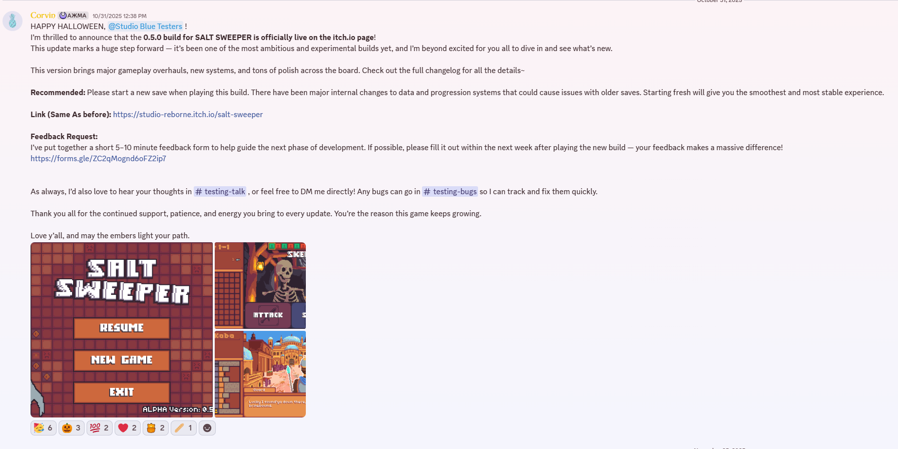
// SCREENSHOT_LOG